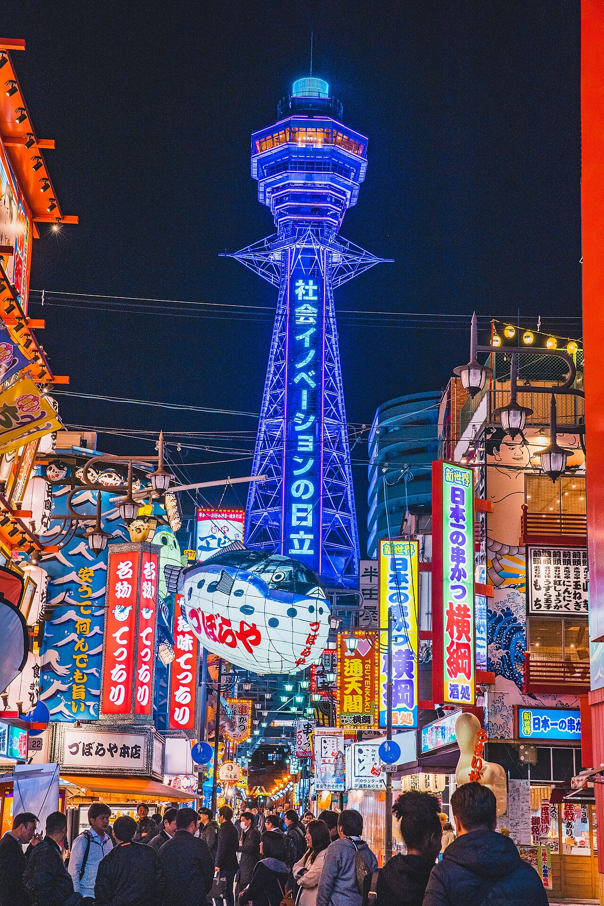
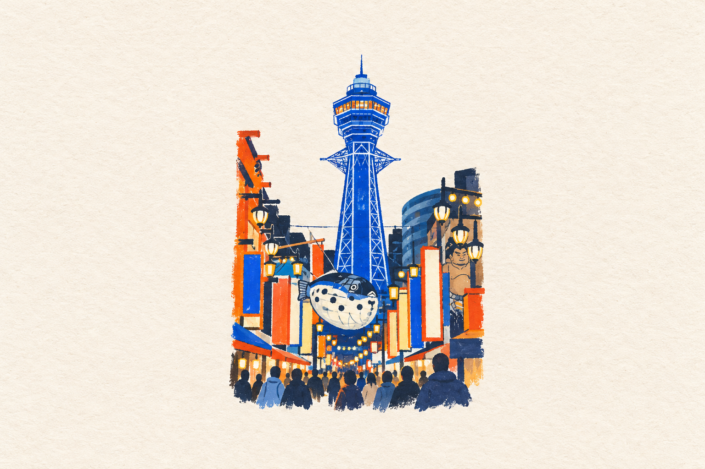

JAPAN · OSAKA · 04 / 04
2026 年 4 月 6 日 · 20:16
那晚，
我們捨不得走。
通天閣的燈還亮著。
把這一刻，再打開一次。
新世界 · 通天閣大阪，日本34.6525° N
135.5063° E
135.5063° E
同一晚，三種目光
01 / 03示範旅伴與取景 · 可換成各自的照片
今日回憶
04 / 04
2026 年 4 月 6 日 · 20:16
通天閣的燈還亮著。
把這一刻，再打開一次。
示範旅伴與取景 · 可換成各自的照片


實景攝影 Dick Thomas Johnson · CC BY 2.0照片取景示範，非使用者真實行程